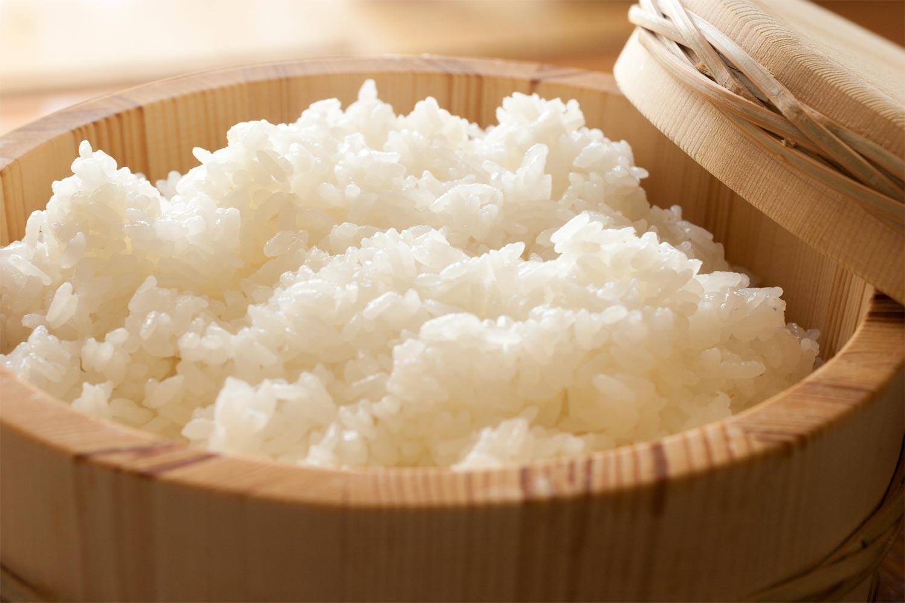

<link rel="stylesheet" href="Style.css">

<!--Esta seccion aun no esta terminada
pendiente de arreglar la imagen de muestra-->

<container class="recetario">
<nav id="header">
    
    
    <ul>
    <li id="home"> Home </li>
    <li id="tienda"> Tienda </li>
    
    <li class="log" onclick="showPopPup('/sesion/Log.html');"> Log In  |</li>
    
    <li class="log" onclick="showPopPup('/sesion/Reg.html');"> Registro </li>
    </ul>  
    
    </nav>

    <div id="image">
    

    </div>

    <div class="recetas">
        <h1> ゴハン </h1>
        <h4> Arroz para sushi </h4> 
        <h2>Ingredientes</h2>

    <p>
        1L. agua <br>

        1kg. Arroz (tipo medio doble carolina)
    </p>

    <h3>Aderezo</h3>
    <p>
        130cc. Azucar o Mirin <br>
        2cdas. Sake <br>
        c/n Sal <br>
        170cc. Vinagre de arroz o de alcohol
    </p> <br>

    <h2>Preparación</h2> <br>
    <h4> Arroz</h4>
    <p>
Colocar el arroz en la olla, y lavarlo en abundante agua fría de 7-8 veces, luego agregar la misma parte en agua fría, <br>
tapar y llevar a cocción por 11 minutos a fuego máximo. <br>
Sin destapar, cocinar a fuego corona por 11 minutos más, <br>
apagar el fuego y dejar reposar por 15 minutos. <br>
Por ultimo en el sushi oke (fuente de madera), <br>
colocar el arroz cocido, retirar el fondo tostado y con espátula de arroz separar los granos. <br>
Agregar el aderezo mezclar todo con la espátula de arroz y mientras se mezclar con abanico ir enfriando el arroz. <br>
Dejar reposar hasta que esté a temperatura ambiente para que esté listo para su uso.
    </p>

    <h4>Aderezo</h4>
    <p>
        En un bowl colocamos todos los ingredientes y mezclamos hasta obtener una mezcla bien homogénea.
    </p>

    </div>
</container>